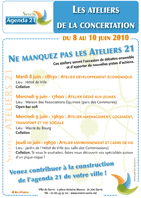

| |
|
|
|
| |
|
|
| |
 |
|
| |
Du 8 au 10 juin 2010
Ateliers de la concertation
Dans le cadre de l'élaboration de l'agenda 21, une deuxième session de concertation vous est proposée en juin. Ces ateliers sont l'occasion de débattre ensemble à partir de la stratégie locale de développement durable définie par vos élus et d'apporter de nouvelles pistes d'actions.
|
|
Mardi 8 juin 2010 - 18h30
Atelier Développement Economique
Lieu : Hôtel de Ville (salle des Commissions ou du Conseil Municipal) -
Collation
Mercredi 9 Juin – 17h00
Atelier dédié aux Jeunes
Lieu : Equinoxe - Open-bar soft
Mercredi 9 Juin – 19h30
Atelier Aménagement, logement,
transports et vie sociale
Lieu : Mairie du Bourg - Collation
Jeudi 10 juin – 19h30
Atelier Environnement
et Cadre de Vie
Lieu : Jardin de l'Hôtel de Ville (ou Salle des Commissions)
Collation Si vous le souhaitez, faites nous découvrir vos spécialités autour d'un pique-nique !
|
 |
Venez contribuer à la construction de l'agenda 21 de votre ville ! |
| |
|
|
| |
Samedi 12 juin de 14h00 à 18h00
4e Fête de l’environnement
du Val d’Europe
Place d’Ariane à Serris, en face de la gare RER de Serris
Val d’Europe Thème de l’édition 2010 : la Biodiversité,
Avec notamment : la conférence de Pierre Douay, photographe animalier défenseur de la biodiversité, l’atelier-concours de tableaux marins avec Sealife, la présence d’un apiculteur, un atelier jardinage, maquillage pour enfants, une photo-symbole sur la place d’Ariane à 16h00 , des dégustations de produits bio...
Renseignements : 01 60 43 80 80
www.valeurope-san.fr
http://biodiversite.valeurope-san.fr
|

photo : Pierre Douay |
|
| |
|
|
| |
Samedi 12 juin 2010, 14h00
Maison Communale des 4 saisons
Concours de pétanque
doublettes formées
Télécharger le programme complet de la saison 2010 de pétanque
Organisé par l'association Serris Pétanque
Renseignements : 09 51 76 70 86
|

|
|
| |
|
|
| |
18 et 19 juin 2010, 20h30
Ferme des Communes
Spectacle "l'oiseau vert"
par le groupe des adultes de Serris de l'AC Théâtre Val d'Europe Une pièce de Carlo GOZZI adaptée par Benno BESSON
Souvent considérée comme la plus riche des pièces de Gozzi, « L'Oiseau vert » mêle de façon harmonieuse élément fantastiques, profondeur des émotions, originalité et humour pour constituer le plus drôle et le plus inattendu des récits initiatiques. Mesdames et messieurs, bienvenue au royaume de Monterotondo, dans cette comédie loufoque, mélange de commedia dell'arte et de conte fantastique où tout peut arriver...
|
 |
|
| |
|
|
| |
Lundi 21 juin 2010, place de l'Hôtel de Ville, entrée libre
Fête de la Musique
19h00 > Paridé Canestraro Quintet (jazz/swing/blues)
www.myspace.com/canestraro
20h00 > Kanji (pop)
www.myspace.com/kanjitheband
21h00 > Julerades (rock français)
www.myspace.com/julerades
22h00 > Matine (reprises rock)
23h00 - 24h00 > Taki (chanson jazzifiante)
www.myspace.com/takiproject
|
 |
|
Retrouvez le programme complet de la Fête de la musique sur les 5 communes du Val d'Europe
et dans le Réseau des médiathèques.
|
| |
|
|